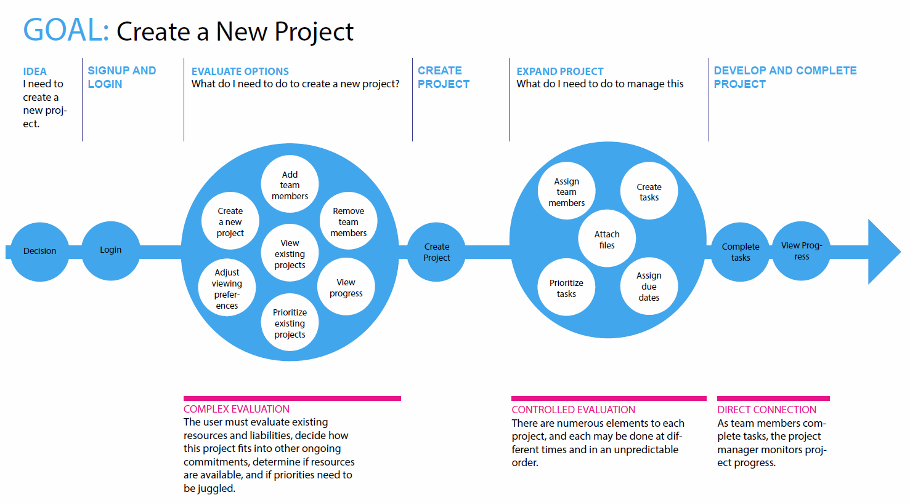

3. Personas
With my initial research done, I could begin to create personas and think about what should go into a minimum viable product.
- I defined three personas. I wanted the design process to constantly remember that we were designing for real people who had real goals and worked in a variety of circumstances and environments.
- I created task models and customer journey maps.
- I defined a minimum viable product. I wasn't going to make the mistakes of some startups and overcommit without doing enough research. I needed firm goals on which I could actually deliver, and I needed to be lean so I could pivot if something didn't work.
A persona representing a Taskly user. It focuses on her responsibilities and circumstances.

A task model, highighting the complex user thought processes that may go into a single app flow.
